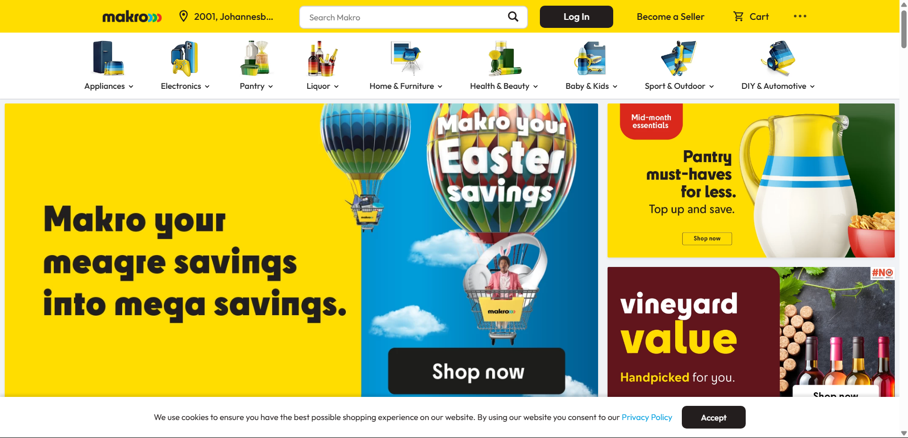
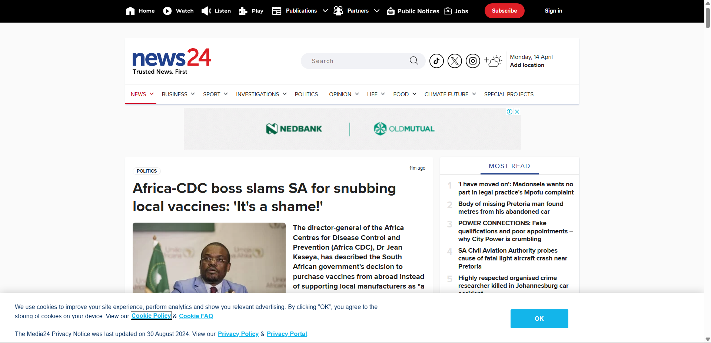

Makro:

Makro
link
Makro is a South African retail chain known for its warehouse-style stores and online platform
offering
a wide variety of goods, including food, electronics, housewares, and liquor. It operates under a
low-cost, low margin trading philosophy, making it a popular choice for businesses and individuals
seeking competitive prices and bulk purchases.
Pros:
You can find almost anything, from electronics, groceries to furniture, all in one place.
They regularly post discounts, bundle deals, and specials online that you might miss in-store.
You can order for home delivery or click-and-collect, which saves a lot of time.
Creating an account lets you track your orders easily and see past purchases.
Their search bar is decent, and the website has clear categories to help you find products
quicker.
If you have Makro credit or a store card, it’s integrated well for payments.
Cons:
Busy periods (like Black Friday sales), the site can lag or even crash.
Sometimes items listed as “in stock” aren’t actually available when you order — very frustrating.
The checkout flow could feel a bit complicated, with too many steps or needing you to fill in
information
repeatedly.
Although there’s a mobile version, it's not as smooth or fast as it should be — you might have
glitches
or weird layouts.
Some items don’t have enough description, specs, or good images, making it hard to know if it’s
exactly
what you want.
If there’s an online issue (wrong item, late delivery), it can be slow to resolve through their
help
channels.
News24:

News24
link
News24 is a leading English-language South African news website and app. It's owned by Media24, a
South African media company, and part of Naspers. News24 provides news on a variety of topics,
including South African and world affairs, business, sport, entertainment, and arts
Pros:
They’re usually very quick to report breaking news across South Africa and internationally.
Covers a lot: politics, business, entertainment, sports, lifestyle, and even opinion pieces.
The layout is clean, with sections clearly divided. It's easy to find specific topics.
You can opt into alerts for major breaking news (good for staying informed fast).
They often use videos, podcasts, and photo stories to complement articles.
You get exclusive, more in-depth analysis and investigative journalism if you subscribe (some
people really like this).
Cons:
Many of the best, deeper stories are locked behind a subscription. Without it, you get only the
basics.
If you don’t subscribe, there are lots of ads, pop-ups, and banners that can slow down the
experience.
Some headlines are a bit sensational just to pull you in — but the article itself might not be
as exciting.
On slow news days, the homepage can feel repetitive, with the same stories staying up for long.
Some users feel that News24 can show bias towards certain political views, depending on the
article/author.
Reflection
Honestly, microformatting was harder than I expected at first. (Microformatting is basically
making sure all the small details in your work ,like headings, bullet points, dates, and
layouts are neat, consistent, and easy to read.) It felt like there were a million tiny
things to watch out for, and it was super easy to miss something small. At times it got a
bit frustrating because I thought I was done, but then I’d spot another mistake.
I honestly still don’t know if I got the hang of it yet but its somewhat making a bit more
sense to me. I realized it's less about being "perfect" and more about being clear and
making things easier to understand. It also made me slow down and be more careful with my
work, which isn't a bad thing at all.
I won’t lie ,it definitely tested my patience a bit. But by the end, I could see how much
cleaner and more professional everything looked when the formatting was done right. Overall,
it was a bit of a grind at times, but I’m glad I stuck with it because I learned a lot.